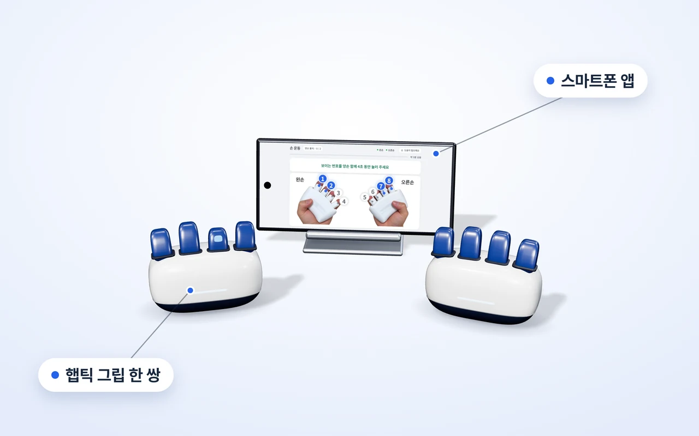
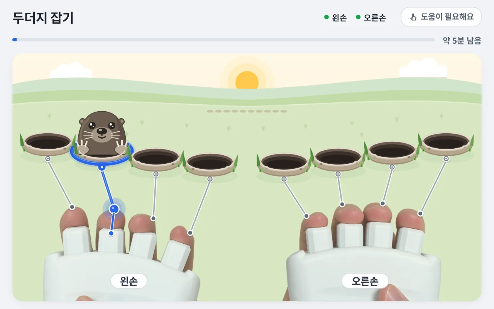
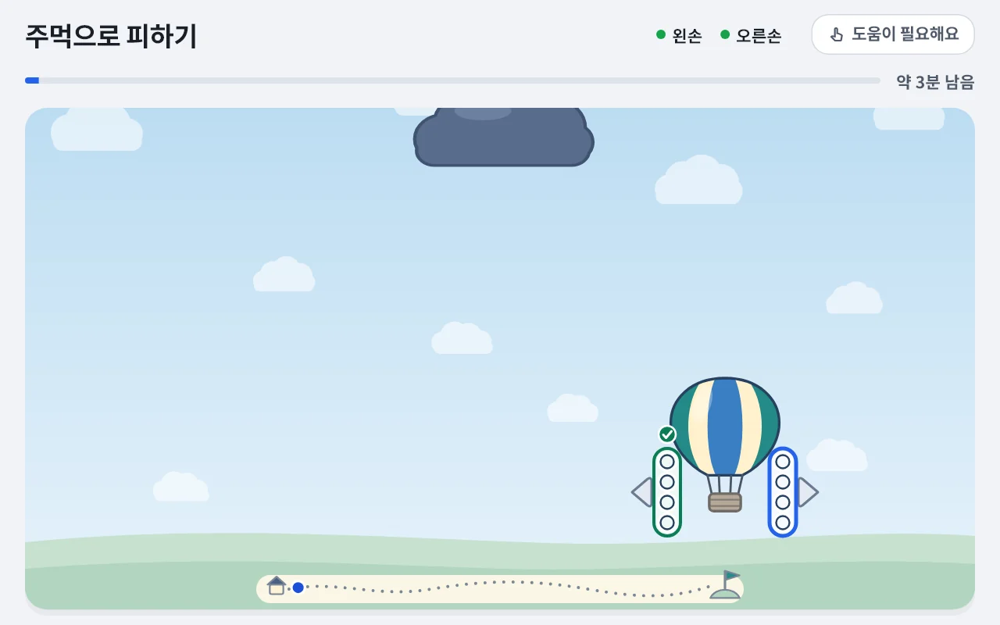
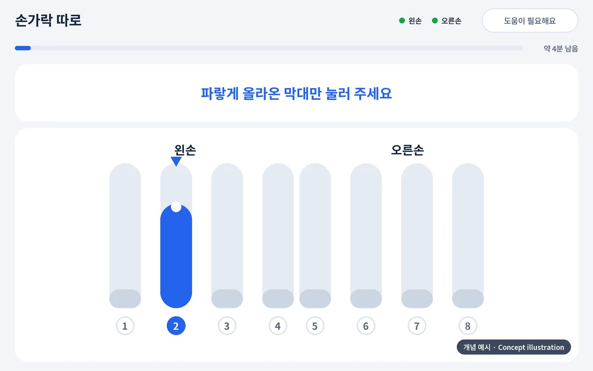
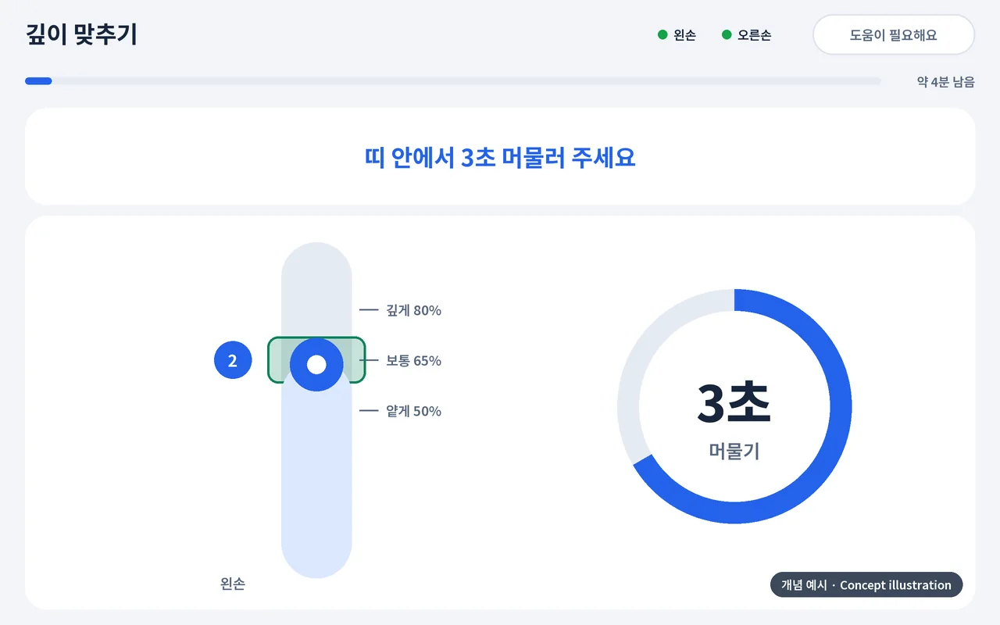
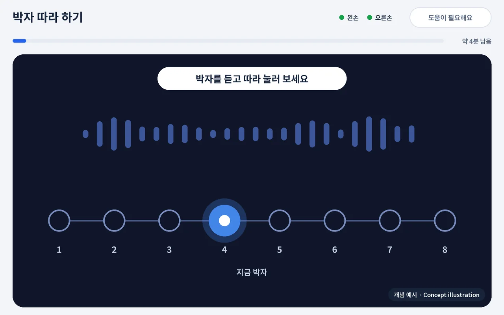
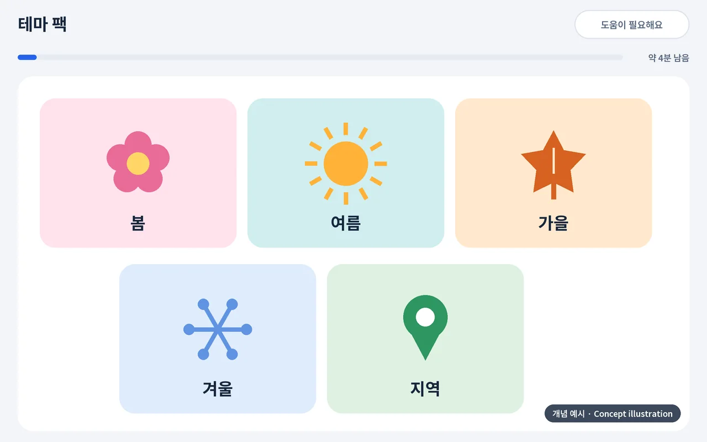
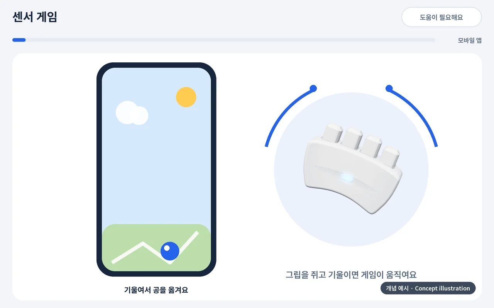
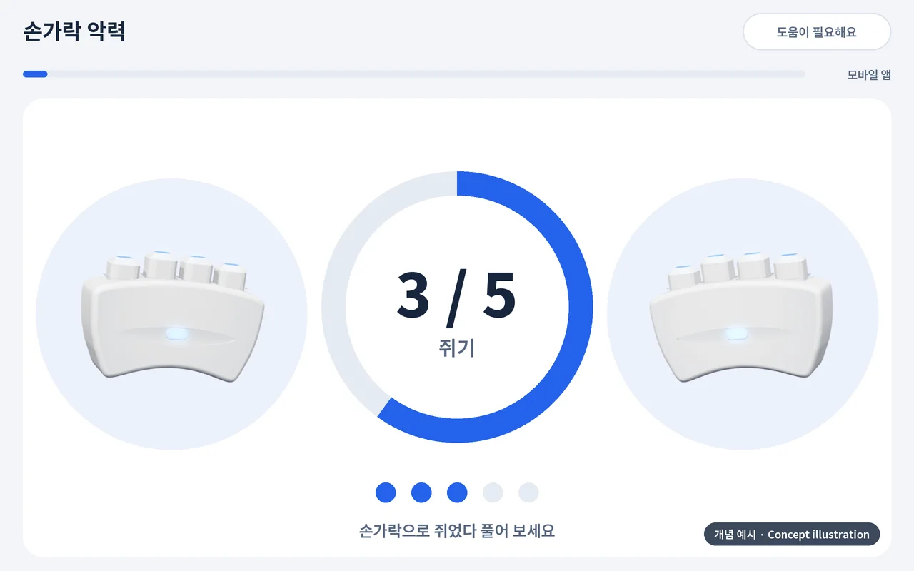

센터용
태블릿 + 관리자 웹
2027년 상반기 출시 예정
- 이런 곳
- 복지관 · 경로당 · 주·야간보호센터 · 요양시설
- 구성
- 햅틱 그립 + 태블릿 앱 + 관리자 웹
- 이렇게 한 까닭
- 담당자가 여러 분의 기록을 한곳에서 관리해, 더 꼼꼼한 서비스를 하도록
출시 예정
Rehaptic은 손으로 조작하는 기기와 앱 콘텐츠를 연결해, 손 움직임과 기억·리듬 과제를 함께 경험하도록 돕는 디지털 훈련 기기입니다.

화면은 개발 중인 앱의 실제 화면을 바탕으로 만든 예시이며, 제품 사양과 화면은 바뀔 수 있습니다.
센터에서는 담당자가 태블릿과 관리자 웹으로 여러 분을 꼼꼼히 챙기고, 집에서는 내 스마트폰 앱으로 부담 없이 즐깁니다.
센터용
2027년 상반기 출시 예정

가정용
2028년 이후 출시 예정
두 구성 모두 같은 콘텐츠 · 같은 측정
구성 그림은 이해를 돕기 위한 개념 예시입니다. 태블릿 화면은 개발 중인 앱의 실제 화면이고, 스마트폰 화면은 폰에 맞게 다시 짠 화면 구성 예시(개념)입니다. 화면 크기에 맞춰 화면 구성(UI)만 다릅니다.
사용자는 화면·소리·진동 등의 안내에 따라 손가락을 움직이고, 기억하거나 박자에 맞춰 반응하는 과제에 참여합니다. 반복 훈련을 더 흥미롭게 이어갈 수 있도록 다양한 활동과 수행 기록을 결합하는 것을 지향합니다.
한 손 네 개의 레버가 손가락마다 따로 눌리고, 어느 손가락인지 진동으로 알려 줍니다.
화면의 안내, 소리, 진동이 같은 신호를 함께 전합니다.
왼손·오른손 그립 한 쌍이 번호 1~8로 앱과 이어집니다.
독립 진동·입력 구조는 국내 특허 출원 중입니다(3건, 등록 전).
그립의 버튼 여덟 개로, 화면이 알려 주는 대로 누릅니다.
파랗게 켜진 번호를 정해진 시간 동안 꾹 누르고 버팁니다. 한 손가락에서 시작해 양손 네 손가락까지, 여러 가지 모양으로 이어집니다.
음악에 맞춰 위에서 내려오는 동그라미가 고리에 차면 그 번호를 누릅니다. 느리게·빠르게, 두 가지 빠르기로 즐기고, 잘 맞히면 곡에 악기가 하나씩 더해집니다.
숫자가 하나씩 크게 나옵니다. 순서대로 기억했다가 같은 순서로 누릅니다. 틀려도 괜찮아요 — 정답을 보여 드리고 다음 숫자로 넘어갑니다.


화면은 개발 중인 앱의 실제 화면을 바탕으로 만든 예시이며, 제품 사양과 화면은 바뀔 수 있습니다.
Rehaptic에 담는 콘텐츠를 영역과 함께 한눈에 봅니다.
켜진 번호의 손가락을 눌러 정해진 시간 동안 쥐고 있기. 지속 · 분리 · 협응
배경음에 맞춰 내려오는 동그라미를 제때 누르기. 박자 · 협응 · 지속
숫자를 보고 기억해 같은 순서로 누르기. 순서 · 분리

켜진 손가락을 눌러 올라온 두더지를 잡는 반응 놀이. 반응 · 분리

왼손 전체를 쥐면 열기구가 왼쪽으로, 오른손 전체를 쥐면 오른쪽으로 가며 먹구름을 피하기. 협응 · 지속

막대 네 개 중 목표 하나만 올리고 나머지는 가만히 두기. 분리 · 조절

화면 막대의 띠 높이에 맞춰 정해진 깊이에서 머물기. 조절 · 지속

박자를 더 깊이 다루는 활동. 박자

계절과 지역을 소재로 한 콘텐츠 묶음. 지속 · 분리 · 협응 · 박자 · 순서

자이로 센서를 담은 새 그립을 쥐고 움직이며 게임을 조작합니다. 조절 · 협응

게임을 즐기며 손가락으로 쥐는 활동을 함께 합니다. 지속 · 조절
「개념 예시」 표시가 있는 그림은 개발 중인 콘텐츠를 설명하기 위해 그린 것이며 실제 앱 화면이 아닙니다. Rehaptic은 출시 예정인 제품이며, 콘텐츠 구성과 일정은 바뀔 수 있습니다. 영역 이름의 뜻과 측정값은 기술 페이지에서 볼 수 있습니다. 효능이나 치료 효과를 말하지 않습니다.
다음 세대 · v3
다음 세대 그립(v3)은 모션 센서(자이로 등)를 담아, 손가락 입력과 함께 손의 방향(기울기·회전)과 위치, 이동 경로를 읽습니다. 새 콘텐츠와 AI 분석으로 이어집니다.
그립 안의 모션 센서가 손의 기울기와 회전, 그리고 어디서 어디로 움직였는지(위치와 이동 경로)를 읽습니다.
그립을 쥔 채 손을 움직이는 새 콘텐츠를 만듭니다. 손가락 입력과 손의 움직임이 함께 쓰입니다.
손가락 기록과 움직임 기록을 함께 모아 경향을 정리하고 구성을 추천합니다. 적용은 담당자가 확인합니다.
다음 세대(v3)는 개발 계획이며 항목과 일정은 바뀔 수 있습니다. 측정값은 훈련 수행 기록이며 진단이나 효과 판단이 아닙니다. 위 그림과 영상은 개념 예시이고 실제 제품·앱 화면이 아닙니다.